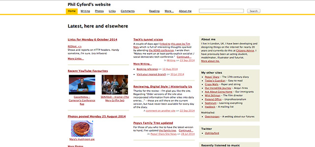
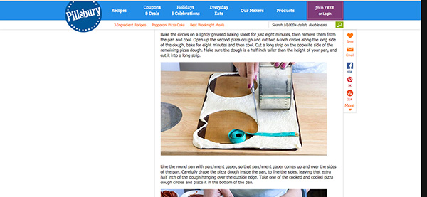
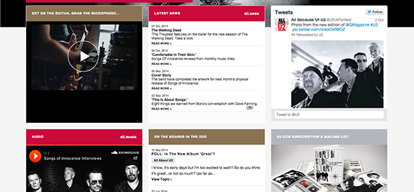

Design Principle Examples
Signal to Noise
My first (good) example is of artist Hoodie Allen's tour page. There's a high signal to noise ratio being that there are in essence 4 main elements on the page. There is the site navigation, the image preceeding the body content, the body content of tour dates, and the footer bar with social media links. It's easy to understand what is going on, and where exactly you need to go to get the information you desire. www.hoodieallen.com/tour My second example is a personal web page for Phil Gyford. This represents a low signal to noise ratio. The layout and the content on the page makes it difficult to understand where to go to find the desired information. The page seems cluttered with information. www.gyford.com 
Chunking
My (good) example is of a Pillsbury website for how to make a pepperoni pizza cake. The site lays out a step by step on how to make a pepperoni pizza cake. Instead of smashing the information together in one hard to read paragraph, they use images to break up the text and make the information more easy to manage Pepperoni Pizza Cake 
Hick's Law
A bad example of this design principle is U2's website. Upon load there are a significant amout of menu options at the header, and once you get into the content of the page, there are a vast number of little content boxes each with different forms of content in them. It's difficult to decide what to do because of all of the presented options. U2 Homepage  A good example of this design principle is Ticketfly's website. There are a couple simple items in a small header, then you're presented with a search bar to find events, and below that there are a few various events near you. It's easy to see where exactly to go as soon as you hit the homepage Ticketfly
Rule of thirds
A bad example of this design principle is Amazon's UK website. Upon loading there is an ad for Amazon FireTV and Prime video right smack in the middle of the site, with content surrounding it. Amazon.co.uk A good example of this design principle is Reddit's homepage. The main draw of content is focused on the left side of the rule of thirds. This makes it seem like the site isn't entirely center based Reddit